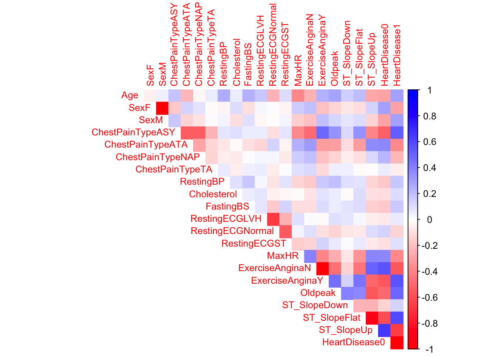

1. What is the purpose of using cross-validation when fitting a random forest model?
Cross-validation provides a more reliable estimate of the model’s performance compared to using a single train-test split. It is used to choose the optimal tuning parameter and reduce bias and variance.
2. Describe the bagged tree algorithm.
The bagged tree algorithm, or bootstrap aggregation, is an ensemble method that creates multiple datasets by resampling the original data with replacement (non-parametric) or from a fitted model (parametric). For each resampled dataset, a full decision tree is grown using all available features at each split. Predictions are made by aggregating results from all trees, using averaging for regression or majority voting for classification. Out-of-bag samples (observations not used in a particular bootstrap sample) are utilized to estimate model performance, providing robust error estimates and confidence intervals.
3. What is meant by a general linear model?
The general linear model has continuous response and allows for both continuous and categorical predictors. It assumes a linear relationship between predictors and the expected value of the response.
4. When fitting a multiple linear regression model, what does adding an interaction term do? That is, what does it allow the model to do differently as compared to when it is not included in the model?
Without interaction terms, the model assumes that the effect of each predictor is constant, regardless of the values of other predictors. Interaction terms relax this assumption, allowing for more flexible and potentially more realistic modeling of complex relationships in the data. It allows the non-additive effects, which means the effect of one predictor can vary depending on the value of another predictor.
5. Why do we split our data into a training and test set?
We split data into training and test sets to evaluate a model’s performance. It helps detect overfitting, assess generalization ability, and offers an unbiased performance estimate. The test set serves as a proxy for new data, allowing for fair model comparison and selection. It also prevents data leakage by keeping a portion of the data completely separate from the training process.
Task 2: Fitting Models
The data set called heart.csv is used for this task. This data set gives information about whether or not someone has heart disease (HeartDisease = 1 or = 0) along with different measurements about that person’s health.
Quick EDA/Data Preparation
# load required librarylibrary(tidyverse)
Warning: package 'ggplot2' was built under R version 4.2.3
Warning: package 'tidyr' was built under R version 4.2.3
Warning: package 'readr' was built under R version 4.2.3
Warning: package 'dplyr' was built under R version 4.2.3
── Attaching core tidyverse packages ──────────────────────── tidyverse 2.0.0 ──
✔ dplyr 1.1.4 ✔ readr 2.1.5
✔ forcats 1.0.0 ✔ stringr 1.5.0
✔ ggplot2 3.5.1 ✔ tibble 3.2.1
✔ lubridate 1.9.3 ✔ tidyr 1.3.1
✔ purrr 1.0.1
── Conflicts ────────────────────────────────────────── tidyverse_conflicts() ──
✖ dplyr::filter() masks stats::filter()
✖ dplyr::lag() masks stats::lag()
ℹ Use the conflicted package (<http://conflicted.r-lib.org/>) to force all conflicts to become errors
library(caret)
Loading required package: lattice
Attaching package: 'caret'
The following object is masked from 'package:purrr':
lift
library(corrplot)
corrplot 0.92 loaded
library(dplyr)library(rpart)library(randomForest)
randomForest 4.7-1.1
Type rfNews() to see new features/changes/bug fixes.
Attaching package: 'randomForest'
The following object is masked from 'package:dplyr':
combine
The following object is masked from 'package:ggplot2':
margin
library(gbm)
Loaded gbm 2.2.2
This version of gbm is no longer under development. Consider transitioning to gbm3, https://github.com/gbm-developers/gbm3
# read in datadata <-read_csv('heart.csv')
Rows: 918 Columns: 12
── Column specification ────────────────────────────────────────────────────────
Delimiter: ","
chr (5): Sex, ChestPainType, RestingECG, ExerciseAngina, ST_Slope
dbl (7): Age, RestingBP, Cholesterol, FastingBS, MaxHR, Oldpeak, HeartDisease
ℹ Use `spec()` to retrieve the full column specification for this data.
ℹ Specify the column types or set `show_col_types = FALSE` to quiet this message.
1. Check on missingness and summarize the data, especially with respect to the relationships of the variables to HeartDisease.
The resting blood pressure and serum cholesterol should not have a value of 0, thus they need to be dropped from the data. For fasting blood sugar and oldpeak, 0 is a possible value, thus, they are keeped.
# drop the invalid datadata <- data |>filter(!RestingBP ==0&!Cholesterol ==0)
After data cleaning, data is summaried to see the general pattern.
# summarize datasummary(data)
Age Sex ChestPainType RestingBP
Min. :28.00 Length:746 Length:746 Min. : 92
1st Qu.:46.00 Class :character Class :character 1st Qu.:120
Median :54.00 Mode :character Mode :character Median :130
Mean :52.88 Mean :133
3rd Qu.:59.00 3rd Qu.:140
Max. :77.00 Max. :200
Cholesterol FastingBS RestingECG MaxHR
Min. : 85.0 Min. :0.0000 Length:746 Min. : 69.0
1st Qu.:207.2 1st Qu.:0.0000 Class :character 1st Qu.:122.0
Median :237.0 Median :0.0000 Mode :character Median :140.0
Mean :244.6 Mean :0.1676 Mean :140.2
3rd Qu.:275.0 3rd Qu.:0.0000 3rd Qu.:160.0
Max. :603.0 Max. :1.0000 Max. :202.0
ExerciseAngina Oldpeak ST_Slope HeartDisease
Length:746 Min. :-0.1000 Length:746 Min. :0.0000
Class :character 1st Qu.: 0.0000 Class :character 1st Qu.:0.0000
Mode :character Median : 0.5000 Mode :character Median :0.0000
Mean : 0.9016 Mean :0.4772
3rd Qu.: 1.5000 3rd Qu.:1.0000
Max. : 6.2000 Max. :1.0000
The above information shows the distribution of numeric variables. However, the HeartDisease should be a 0-1 coded categorical variable. let’s correct it and see the distribution of categorical variables.
# correct the data type of HeartDiseasedata$HeartDisease <-as.character(data$HeartDisease)# summarize data (for character variables)table(data$Sex)
F M
182 564
table(data$ChestPainType)
ASY ATA NAP TA
370 166 169 41
table(data$RestingECG)
LVH Normal ST
176 445 125
table(data$ExerciseAngina)
N Y
459 287
table(data$ST_Slope)
Down Flat Up
43 354 349
table(data$HeartDisease)
0 1
390 356
Great! The above information shows the distribution of the categorical variables. Then, we want to see the relationship between HeartDisease and the remaining variables. Let’s see the correlation plot. Prior to that, we need to convert categorical variables into dummy variables using dummyVars() and predict().
# Convert categorical variables to dummy variablesdata_dummy <-dummyVars("~ .", data = data)data_transformed <-data.frame(predict(data_dummy, newdata = data))# Calculate the correlation matrixcor_matrix <-cor(data_transformed, use ="complete.obs")# Create the correlation plotcorrplot(cor_matrix, method ="color", tl.cex =0.8,col =colorRampPalette(c("red", "white", "blue"))(200),type ="upper", diag =FALSE)

The correlation plot shows HeartDisease1 is strongly and positively correlated with ChestPainTypeASY, ExerciseAnginaY, Oldpeak, ST_SlopeFlat, Age, and SexM. At the same time HeartDisease1 is strongly and negatively correlated with ST_SlopeUp, ExerciseAnginaN, MaxHR, ChestPainTypeATA, ChestPainTypeNAP, and SexF. Overall, whether a person has HeartDisease is related to his/her ExerciseAngina, Oldpeak, ST_Slope, ChestPainType, MaxHR, Sex, and Age.
2. Create a new variable that is a factor version of the HeartDisease variable (if needed, this depends on how you read in your data). Remove the ST_Slope variable and the original HeartDisease variable (if applicable).
3. We’ll be doing a kNN model below to predict whether or not someone has heart disease. To use kNN we generally want to have all numeric predictors (although we could try to create our own loss function as an alternative). In this case we have some categorical predictors still in our data set: Sex, ExerciseAngina, ChestPainType, and RestingECG.Create dummy columns corresponding to the values of these four variables for use in our kNN fit.
At this point, the four categorical variables have already been transformed to dummy variables. It is ready for the kNN model.
Train the kNN model. Use repeated 10 fold cross-validation, with the number of repeats being 3.
# Use repeated 10 fold cross-validation, with the number of repeats being 3. trctrl <-trainControl(method ="repeatedcv", number =10, repeats =3)set.seed(55807161)knn_fit <-train(HeartDisease ~., data = training_set, method ="knn",trControl=trctrl,preProcess =c("center", "scale"), #preprocess the datatuneGrid =expand.grid(k =1:40),tuneLength =10)knn_fit
k-Nearest Neighbors
597 samples
17 predictor
2 classes: '0', '1'
Pre-processing: centered (17), scaled (17)
Resampling: Cross-Validated (10 fold, repeated 3 times)
Summary of sample sizes: 537, 538, 538, 536, 538, 538, ...
Resampling results across tuning parameters:
k Accuracy Kappa
1 0.7509371 0.5000291
2 0.7521421 0.5022997
3 0.7922114 0.5822427
4 0.7989719 0.5966304
5 0.8096505 0.6183091
6 0.8047146 0.6084138
7 0.8057978 0.6106429
8 0.7985379 0.5960863
9 0.7941393 0.5872720
10 0.8030573 0.6047404
11 0.7996669 0.5980992
12 0.8051769 0.6089993
13 0.8063436 0.6114314
14 0.8096213 0.6180180
15 0.8124468 0.6233701
16 0.8135479 0.6256798
17 0.8119186 0.6224741
18 0.8130203 0.6247162
19 0.8119186 0.6223906
20 0.8086038 0.6155765
21 0.8163633 0.6313645
22 0.8102325 0.6190560
23 0.8096863 0.6180717
24 0.8080285 0.6147284
25 0.8107883 0.6202272
26 0.8029726 0.6045378
27 0.8079635 0.6145153
28 0.8068709 0.6123385
29 0.8041116 0.6069732
30 0.8091314 0.6171107
31 0.8052419 0.6092233
32 0.8052789 0.6094364
33 0.8030658 0.6050089
34 0.8019641 0.6028756
35 0.8019641 0.6027902
36 0.8035934 0.6060378
37 0.8024823 0.6038011
38 0.8052786 0.6095102
39 0.8046954 0.6084098
40 0.8058348 0.6105405
Accuracy was used to select the optimal model using the largest value.
The final value used for the model was k = 21.
Its showing Accuracy and Kappa metrics result for different k value. From the results, it automatically selects best k-value. Here, our training model is choosing k = 21 as its final value. Then, let’s predict classes for our test set and test its performance.
# predict the test set with the trained modeltest_pred <-predict(knn_fit, newdata = test_set)# test the model performance with the confusion matrixconfusionMatrix(test_pred, test_set$HeartDisease)
Confusion Matrix and Statistics
Reference
Prediction 0 1
0 52 11
1 19 67
Accuracy : 0.7987
95% CI : (0.7252, 0.8598)
No Information Rate : 0.5235
P-Value [Acc > NIR] : 2.755e-12
Kappa : 0.5944
Mcnemar's Test P-Value : 0.2012
Sensitivity : 0.7324
Specificity : 0.8590
Pos Pred Value : 0.8254
Neg Pred Value : 0.7791
Prevalence : 0.4765
Detection Rate : 0.3490
Detection Prevalence : 0.4228
Balanced Accuracy : 0.7957
'Positive' Class : 0
The confusion matrix shows our model accuracy for the test set is 79.87%. It works pretty well.
Logistic Regression. Based on EDA, posit three different logistic regression models.
Since glm() could deal with the character predictors, thus, we will use data without dummy variables.
# remove ST_Slope and change HeartDisease to factor datadata_logistic <- data |>select(-ST_Slope) |>mutate(HeartDisease =as.factor(HeartDisease))# check data structurestr(data_logistic)
The EDA results show that whether a person has HeartDisease is related to his/her ExerciseAngina, Oldpeak, ChestPainType, MaxHR, Sex, and Age. First, let’s just fit the linear model with these predictors.
set.seed(55807162)# fit model 1logistic_M1_fit <-train(HeartDisease ~ ExerciseAngina + Oldpeak + ChestPainType + MaxHR + Sex + Age, data = training_set_glm, method ="glm",family="binomial",preProcess =c("center", "scale"), #preprocess the datatrControl=trctrl)summary(logistic_M1_fit)
Call:
NULL
Deviance Residuals:
Min 1Q Median 3Q Max
-2.7275 -0.5702 -0.1881 0.5406 2.7007
Coefficients:
Estimate Std. Error z value Pr(>|z|)
(Intercept) -0.1207 0.1191 -1.014 0.31079
ExerciseAnginaY 0.5976 0.1290 4.633 3.60e-06 ***
Oldpeak 0.7640 0.1469 5.200 2.00e-07 ***
ChestPainTypeATA -0.7867 0.1377 -5.713 1.11e-08 ***
ChestPainTypeNAP -0.6640 0.1233 -5.385 7.25e-08 ***
ChestPainTypeTA -0.3406 0.1113 -3.059 0.00222 **
MaxHR -0.1102 0.1304 -0.845 0.39831
SexM 0.7252 0.1297 5.592 2.24e-08 ***
Age 0.3848 0.1312 2.933 0.00335 **
---
Signif. codes: 0 '***' 0.001 '**' 0.01 '*' 0.05 '.' 0.1 ' ' 1
(Dispersion parameter for binomial family taken to be 1)
Null deviance: 826.40 on 596 degrees of freedom
Residual deviance: 478.36 on 588 degrees of freedom
AIC: 496.36
Number of Fisher Scoring iterations: 5
# predict the test set with the trained modeltest_M1_pred <-predict(logistic_M1_fit, newdata = test_set_glm)# test the model performance with the confusion matrixconfusionMatrix_M1<-confusionMatrix(test_M1_pred, test_set_glm$HeartDisease)
Logistic Regression Model 2
Since model 1 shows MaxHR’s impact is not significant. Also, the correlation between Age and MaxHR is relatively high. The multicolinearity might exist. Let’s drop MaxHR from the model.
set.seed(55807163)# fit model 2logistic_M2_fit <-train(HeartDisease ~ ExerciseAngina + ChestPainType + Oldpeak + Age + Sex,data = training_set_glm, method ="glm",family="binomial",trControl=trctrl)summary(logistic_M2_fit)
Call:
NULL
Deviance Residuals:
Min 1Q Median 3Q Max
-2.7287 -0.5614 -0.1902 0.5428 2.6800
Coefficients:
Estimate Std. Error z value Pr(>|z|)
(Intercept) -4.00879 0.77494 -5.173 2.30e-07 ***
ExerciseAnginaY 1.27059 0.25936 4.899 9.63e-07 ***
ChestPainTypeATA -1.94664 0.32986 -5.901 3.60e-09 ***
ChestPainTypeNAP -1.62277 0.28999 -5.596 2.20e-08 ***
ChestPainTypeTA -1.53610 0.48301 -3.180 0.001472 **
Oldpeak 0.71386 0.13734 5.198 2.02e-07 ***
Age 0.04401 0.01322 3.329 0.000872 ***
SexM 1.70858 0.29985 5.698 1.21e-08 ***
---
Signif. codes: 0 '***' 0.001 '**' 0.01 '*' 0.05 '.' 0.1 ' ' 1
(Dispersion parameter for binomial family taken to be 1)
Null deviance: 826.40 on 596 degrees of freedom
Residual deviance: 479.07 on 589 degrees of freedom
AIC: 495.07
Number of Fisher Scoring iterations: 5
# predict the test set with the trained modeltest_M2_pred <-predict(logistic_M2_fit, newdata = test_set_glm)# test the model performance with the confusion matrixconfusionMatrix_M2<-confusionMatrix(test_M2_pred, test_set_glm$HeartDisease)
Logistic Regression Model 3
Lastly, since EDA shows the correlation between ExerciseAngina and ChestPainType is relatively high. Let’s see the model fit if we add the interaction term of these two.
set.seed(55807164)# fit model 3logistic_M3_fit <-train(HeartDisease ~ Oldpeak + Sex + Age + ExerciseAngina + ChestPainType + ExerciseAngina:ChestPainType, data = training_set_glm, method ="glm",family="binomial",trControl=trctrl)summary(logistic_M3_fit)
Call:
NULL
Deviance Residuals:
Min 1Q Median 3Q Max
-2.7650 -0.5646 -0.1808 0.5302 2.6760
Coefficients:
Estimate Std. Error z value Pr(>|z|)
(Intercept) -4.14538 0.79954 -5.185 2.16e-07 ***
Oldpeak 0.71497 0.13869 5.155 2.53e-07 ***
SexM 1.75163 0.30511 5.741 9.41e-09 ***
Age 0.04491 0.01331 3.375 0.000738 ***
ExerciseAnginaY 1.39605 0.33316 4.190 2.79e-05 ***
ChestPainTypeATA -1.98753 0.39304 -5.057 4.26e-07 ***
ChestPainTypeNAP -1.51758 0.34827 -4.357 1.32e-05 ***
ChestPainTypeTA -1.21861 0.49680 -2.453 0.014171 *
`ExerciseAnginaY:ChestPainTypeATA` 0.28370 0.76217 0.372 0.709723
`ExerciseAnginaY:ChestPainTypeNAP` -0.32499 0.62056 -0.524 0.600484
`ExerciseAnginaY:ChestPainTypeTA` -2.55065 1.38044 -1.848 0.064643 .
---
Signif. codes: 0 '***' 0.001 '**' 0.01 '*' 0.05 '.' 0.1 ' ' 1
(Dispersion parameter for binomial family taken to be 1)
Null deviance: 826.40 on 596 degrees of freedom
Residual deviance: 474.98 on 586 degrees of freedom
AIC: 496.98
Number of Fisher Scoring iterations: 5
# predict the test set with the trained modeltest_M3_pred <-predict(logistic_M3_fit, newdata = test_set_glm)# test the model performance with the confusion matrixconfusionMatrix_M3<-confusionMatrix(test_M3_pred, test_set_glm$HeartDisease)
As shown above, Model 1 has the best performance/accuracy. Model 1 is HeartDisease ~ ExerciseAngina + Oldpeak + ChestPainType + MaxHR + Sex + Age. It seems drop the insignificant predictor from the model or add interaction term does not help.
Tree Models
To create tree models, we don’t need to create the dummy variables. Thus, we can use the previous data set “data” in the training process.
Fitting a model with ExerciseAngina, ChestPainType, Oldpeak, Age, MaxHR and Sex as predictors. #### classification tree model